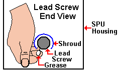
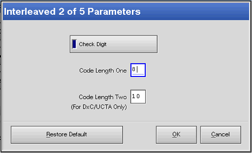
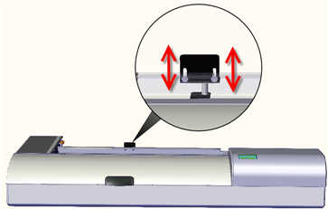
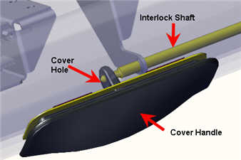

Loose or bent lead screw bracket (holds lead screw to SPU baseplate)
Binding on-load or presentation tray lead screw
Damaged background bar code metal plate
SPU cover switch is positioned incorrectly. If the cover switch bracket is too low, then the cover hole does not align to the SPU interlock shaft, causing binding and increased stress on the on-load pusher.
Oversized rack tab jamming in the alignment bracket at the home position and sticking when the presentation tray attempts to move out to the SPU.
Defective or obstructed sensor
Damaged presentation tray linkage gate
Defective or worn belt or pulley
Defective cable
Defective motor
Rack offload area is full
Sample Presentation unit off loader failure
Sample Presentation Unit Offload Cover Open
SPU Offload Tray jammed: clear the jam and press ROUTINE button
Offload issues
Open off-load cover.
Sticky or stuck off-load rack sensor flag, causing the off-load pusher to run continuously.
Failing open-closed sensor or switch for the off-load cover
No tube type is assigned to this rack ID
Sample Presentation Unit bad rack barcode
Sample Presentation Unit barcode reader failure
Failure to read barcodes
Rack ID is not configured
Sample bar code symbology is not configured or not supported
Sample bar code print quality is poor or not meeting specifications. Refer to Sample Bar Code Label Specifications in the DxI Reference Manual.
Defective or poorly positioned sample or rack bar code label
Defective bar code reader
Dirty bar code reader lens
Wrong Mode, SPU is busy
Unable to enter Diagnostics or run samples due to pop-up message.
Racks remain on the sample presentation tray during initialization
SPU on-load or off-load cover is not closed
Open an instrument cover, close, and initialize.
Note: On software V4.4 and above, this error should not occur when trying to enter Diagnostics or Priming screens and the SPU is idle (not loading or unloading racks). If the error does occur on software V4.4 and above, then select
Diagnostics
> Unlock SPU.
Symptom/Issue
Possible Causes and Areas to Troubleshoot
There is noise coming from the SPU.
Object (sample cup, reaction vessel, paper) is in the path of the presentation tray
MCC PCB 0
Ribbon J01 or power cable connection JP1 on MCC backplane is loose
On-load or presentation tray screw is binding
SPU cover switch is positioned incorrectly. If the cover switch bracket is too low, then the cover hole does not align to the SPU interlock shaft, causing binding and increased stress on the on-load pusher.
Verify that the bar code reader is operating correctly
Verifying Bar Code
Troubleshooting Procedure
Steps
Examining the SPU
Open the upper left main cover. Inspect and clean the presentation tray area for any RVs, foreign material, or loose connections to the SPU interface PCB.
Open the SPU main and off-load covers, and inspect and clean the SPU area:
Remove any foreign material or spills in the on-load, presentation tray, and off-load areas using deionized water and a lint-free towel.
Inspect and clean the sensors: On-load pusher home sensor, end of on-load sensor, presentation home sensor, off-load sensor, and off-load full sensor.
Clean the on-load, presentation tray, and off-load rails.
Inspect the on-load and presentation tray lead screw. Confirm that the clamps holding the lead screws in place are secure.
Inspect the background bar code metal plate in the presentation tray area. If the plate is bent, straighten it. The plate is not available in Oracle. If the plate is damaged beyond repair, contact STS for a replacement.
Repair any defects discovered. Test the operation of the SPU on-load pusher by exercising the SPU. Refer to the troubleshooting procedure Exercising the SPU.
If the on-load pusher or presentation tray continues to stop during travel or make loud noises, and all the hardware has been verified, and the only remaining option is to replace the on-load or presentation tray lead screw. Then:
Apply a very small amount of Lubriplate grease to the rough area of the lead screw where the pusher or presentation tray hangs up or stalls.
Cycle the pusher or tray to work in the grease. The grease can be applied from the top side of the SPU.
Order a replacement lead screw, and install it as soon as possible.
Caution:
The manufacturer recommends not greasing the lead screw.
Lubricating the lead screw is a last resort.
Do not lubricate the entire lead screw, only the rough area.
Applying more than a small amount of grease can result in SPU pusher jams or errors if the lubricant dries out.
Note: This grease is not toxic and can be applied directly to fingers. If preferred, use a glove or towel. A metal shroud covers the lead screw, so the only access to the lead screw is at the underside.

To lubricate and clean the guide rod correctly, refer to the
Instrument: Lubrication procedure.
Check that the linkage gate is not damaged.
Exercising the SPU
From the
Main Menu, select
Diagnostics > Device Diagnostics > Mechanics > Alignments.
Note: SMCTest.exe can also be used to exercise the SPU. Refer to the
Tests: SMCTest procedure.
Select the device and the position to be exercised.
SPU Off-load = Extended Position
SPU On-load = End of On-load
SPU Presentation Tray = On-load Position, Rack Bar Code, Sample Pipettor, or Sample Bar Code Position 1–4
Select
Home Device > Start Cycling.
Listen and watch for motion errors or sensors that may not be changing state.
Verify that all sensors are connected corrected.
Use digital inputs and the SPU interface PCB to verify operation of all sensors.
Verify that the connection to the backplane from the SPU interface PCB is seated correctly.
Verify that a set-screw has not come loose.
If there is a lot of chattering noise, then swap the MCC0 card with MCC1.
Select
Stop Cycling.
Verifying Bar Code
From the
Main Menu, select
Diagnostics > Device Diagnostics > Mechanics > Alignments .
Verify that the bar code reader beam is centered on the back label.
If the beam is not centered, then adjust the bar code bracket so that the red beam is centered on the background bar code.
If there is no beam, then confirm that the bar code reader power connections are correct and lens is not dirty.
If the beam is tilted up or down, then adjust the bar code bracket.
From the
Alignments screen, select
Sample Presentation Tray Home > On-Load Position.
Load a rack onto the sample presentation tray with a labeled tube in position 4 and move to the Rack Bar Code position.
Verify that the bar code reader beam is centered on the rack.
Move to the Sample Bar Code Position 4 and verify that the bar code reader beam is centered on the sample.
If all alignments are correct, then exit the
Diagnostic screen.
Verify that the bar code reader is set-up correctly. From the
Main Menu, select
Configure
> System Setup > Bar Code Reader Setup.
From the
Main Menu, select
Sample Manager > New Request.
Program a rack with tests and load the rack.
Note: It does not matter what tests are programmed. The purpose of the tests is only to verify bar code operation.
On integrated DxI instruments, the bar code setup is done on the chemistry console and the bar code reader setup window on the DxI is disabled. Occasionally the bar code does not read the same on the DxI as on the DxC. The solution is to configure a secondary bar code type on the DxC. For I2 of 5 bar codes with length 9 + check digit, the bar code reader is configured like this:

This setting allows both systems to read the bar code correctly. Code Length One is used to set the DxI bar code reader to the correct setting while allowing the DxC to recognize the bar code on its side using the Code Length Two length. If the customer is using the Code Length Two for a different barcode, then there is no spare setting to use. The DxI could be removed from the integrated configuration to enable the BCR setup and then reconfigured to integrated, but the setting is reset by the DxC any time it is rebooted.
Verifying Operation of Interlock Switches
Open and close the SPU Cover.
Note: If the instrument is in Diagnostic mode, the SPU will not move. Press
[F9] to proceed to the
Main Menu.
Check that the SPU on-load motor starts moving when the plexiglass cover is closed completely. The interlock shaft should move smoothly through the hole in the SPU handle.
If the SPU on-load motor starts moving when the cover is still open, then adjust the SPU cover switch bracket. Open and close the SPU cover, and verify that the SPU on-load motor moves.
Figure 379: SPU cover switch bracket

Figure 380: SPU cover handle and interlock shaft

From the
Main Menu, select
Diagnostics > Device Diagnostics > Digital Devices > Digital Inputs.
Verify operation of the interlock switch.
If verifying the SPU cover interlock switch, then select
SPUCoverClosed from the input list.
If verifying the SPU off-load cover interlock switch, then select SPUOffloadCoverClosed from the input list.
Manually toggle the interlock switch, and verify the switch is changing states on the
Digital Inputs screen and on the SPU interface PCB.
If the interlock switch is not working, then verify all cable connections and the switch.
Verifying SPU Operation
Open the SPU cover and load 16 racks.
Note: The SPU on-load pusher advances differently depending on the number of racks that remain in the on-load Area.
If the rack position is one or more racks in the SPU on-load area, then the on-load pusher advances based on the end of on-load sensor detecting the racks.
If rack position is zero racks in SPU on-load area (the remaining racks are being pushed through the presentation tray), then the on-load pusher advances based on the end of on-load alignment.
Note: If motion issues only occur with fewer than three racks, then troubleshoot the end of on-load alignment. Verify that the racks push straight (do not tilt) during the alignment. Tilting racks can be caused by an incorrect alignment, dirty end of on-load sensor, or a bent pusher.
Open the SPU cover and load one rack.
Bypass the SPU cover interlock switch and watch the movement of the on-load pusher, presentation tray, and off-load pusher.
Caution: When inserting the bypass, the SPU begins to move.
If there is a jam, then troubleshoot that area using the troubleshooting procedures Examining the SPU and Exercising the SPU.